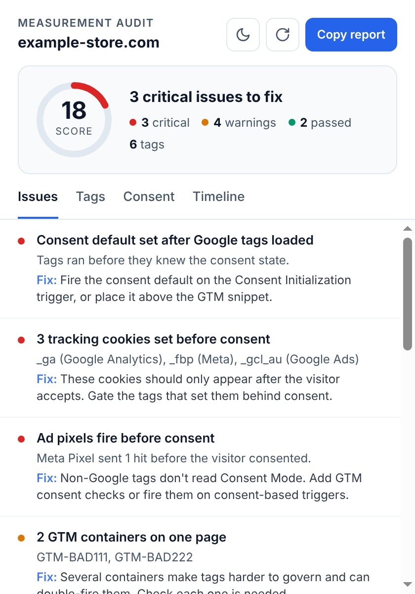

2017 – 2020 · Exeter
University of Exeter
BA Anthropology
Researched alternative knowledge communities; curated artefacts for the John Douglas Museum.
People & research
I'm Matvey Lutsenko, a commercial strategist at Google with a builder's instinct. Four threads run through my work, and each node is a role where they came together.
Scroll to travel through it, or select a node
2017 – 2020 · Exeter
BA Anthropology
Researched alternative knowledge communities; curated artefacts for the John Douglas Museum.
People & research
2020 – 2021 · London
MSc Digital Anthropology
Thesis: Russian pro-democratic digital journalism and diasporic media networks.
People & research
Jan – Dec 2022 · London
Business Development Executive
AI-powered publishing platform.
Go-to-marketBuild & AIPeople & research
Dec 2022 – Jul 2026 · London
Enterprise Business Development Representative
Accelerated Cloudflare adoption across EMEA, progressing laterally across CEE and enterprise accounts.
Go-to-marketBuild & AIPeople & research
Aug 2026 – now · Dublin
Account Strategist
Google Customer Solutions, managing a portfolio of 50 UK & Ireland businesses.
Go-to-marketAds & measurementBuild & AI
2026 · Side project
Prototype · in testing
A Chrome extension I designed and built on my own time to answer one question in 30 seconds: is this website's measurement set up properly? Open a site, click the icon, and get a score, the issues ranked by severity and a plain-English fix for each.


Chrome Extension (MV3) · JavaScript · Consent Mode v2 · GA4 & GTM · Playwright tests
Ads & measurementBuild & AI
The same loop runs through every role I've had, whether it's a client account, a sales territory or a team process.
Find the manual, repetitive or guesswork-driven step that's slowing results down.
Map a better way, grounded in data and in how people actually work day to day.
Prototype it independently: a workflow, a framework, an AI assist or a playbook.
Roll it out to clients and teammates, track adoption and impact, and iterate.
Then round again.
The skills and tools I reach for to take an idea from a manual workaround to a working system.
I'm always happy to talk about go-to-market, AI workflows, or the tools I'm working on.
mtvlutsenko@gmail.com